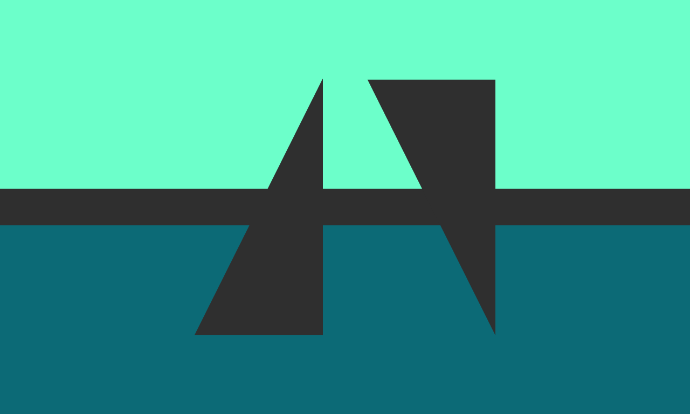

Kaksbased !! :: Someone that was born as a duo/two people in one body, but didn’t label it a system until there were more people. A system that was never a singlet, but also didn’t think of themselves as a system yet.
The number in front (kaks) can be changed to any number in Estonian for whatever number of people were born in the body.